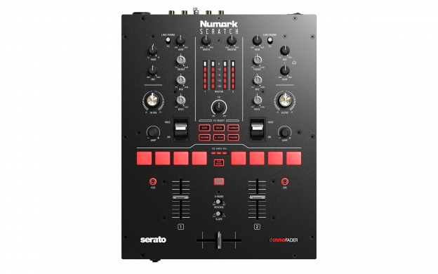

Numark Scratch Review: What You're Actually Buying in This 2-Channel Scratch Mixer
The Numark Scratch is an all-metal 2-channel scratch mixer — not an all-in-one controller. No jog wheels, no built-in playback decks: you supply the audio sources (turntables, CDJs/media players, or other line inputs) and mix them — standalone for analog, or via Serato when connected, where this unit unlocks Serato DJ Pro and Serato DVS. Setup math, comparison with the Pioneer DDJ-FLX4 and compatibility notes — updated 2026.

Disclosure: This page uses affiliate links. We may earn a commission at no extra cost to you. Full disclosure →
If you search for the Numark Scratch, you'll see a lot of pages calling it a "controller" with platters and jog wheels. That's the wrong product category, and it leads to the wrong setup. The Numark Scratch is a 2-channel scratch mixer — an all-metal hardware control surface for a scratch/DVS rig. It has no jog wheels and no built-in playback decks — it is a control surface for the audio you connect to it, and that works in two different ways. Analog mixing of ordinary vinyl records or line sources is standalone: no computer, no Serato required (Numark describes the Scratch as "a great mixer to play vinyl records"). Software (DVS) playback is a different path: your turntables or CDJs/media players carry Serato timecode, and a connected computer runs Serato DJ Pro. Which one you're building for is the first decision, because it changes what the rest of the setup needs.
What it brings to that rig: an Innofader scratch crossfader with reverse and slope control, 8 performance pads, dedicated software FX controls with dry/wet adjustment, an instant loop encoder, a combo mic input, and 24-bit audio. And on the software side, per Serato's current hardware page, this unit unlocks Serato DJ Pro for free when plugged into the software and unlocks Serato DVS — a combination not listed as included on the FLX4's Serato hardware page.
That mix of features makes the Scratch a strong fit for scratch DJs and turntablists building a two-channel DVS setup — and a poor fit for anyone expecting an all-in-one unit to handle decks, mixing and playback in one box. Below is what the current official pages actually say, what a complete setup costs you in parts, and how the Scratch differs from a comparable all-in-one controller like the Pioneer DDJ-FLX4.
What the Numark Scratch actually is (and isn't)
It is: a 2-channel, all-metal scratch mixer. Numark describes it as a "24-bit two-channel mixer" with "an all-metal build," and its feature list calls out the Innofader crossfader, performance pads, instant loop encoder and toggle paddles for software effects. Serato's hardware page for the Scratch says it is a "2 channel mixer designed for the scratch DJ."
It is not: a controller. There are no jog wheels, no platters and no transport buttons driving two built-in decks. If a listing or review describes platters, motorized jog wheels or "high-resolution capacitive platters" on this unit, it is describing a different (or invented) piece of hardware.
What the control surface gives you (per Numark's product page and Serato's hardware page):
- Innofader crossfader with two switches: reverse the channels, or change slope for a hard cut vs. a soft curve.
- 8 performance pads (4 per deck) across 3 pad modes — cues, rolls and sampler access.
- 6 dedicated software FX selectors with dual toggle paddles and a dry-to-wet mix control.
- Instant loop encoder: push in to loop, turn to extend or shorten.
- Filter knobs for audio sweeps.
- Combo mic input (XLR or ¼-inch) with tone control, XLR main output plus unbalanced booth output, line and phono inputs for both channels, and a dual headphone cue output.
Official sources for this section: numark.com — Scratch product page and serato.com — Scratch hardware page (both checked 2026-10-12).
Serato software: what's included with the Scratch
This is the part of the story that most changes the total cost of the setup, and it's the claim most worth verifying before you buy — the FLX4 comparison below shows a concrete counter-example for reference.
Serato DJ Pro, unlocked by the hardware. Serato's hardware page for the Scratch states: "This hardware unlocks Serato DJ Pro for free when plugged into the software. Download DJ Pro." Numark's own product page lists "Serato DJ Pro with DVS license included" in the feature block and links a direct Serato DJ Pro download. Serato describes the unlock in terms of the hardware being plugged in, so don't assume any purchase guarantees usage outside that relationship — read Serato's current terms before relying on it.
Separate software purchases. A standalone software purchase is different from the Scratch hardware unlock. Check Serato’s current plans and terms if you also need software for another setup.
Serato DVS, also unlocked. Serato's Scratch page: "This hardware unlocks Serato DVS so it can be used with turntables or CDJs." Numark's page frames this the same way ("Serato DVS ready," "unlocks Serato DVS for Serato DJ Pro instantly"). For a concrete contrast on the official pages: Serato's Rane ONE hardware page frames DVS as a separate required expansion: "To use this hardware with Serato Control Vinyl or Serato Control CDs, you will need the Serato DVS expansion pack." The Scratch, by contrast, lists DVS as unlocked by the hardware alongside the Pro unlock.
Also works with Serato Studio. Serato's Scratch page notes it "also works with Serato Studio, the fastest and most intuitive DAW for making beats" — useful context if you're building a scratch-sample production setup.
Official sources: serato.com — Scratch hardware page; numark.com — Scratch product page; serato.com — DJ Pro pricing (all checked 2026-10-12).
Why a mixer requires a different setup than an all-in-one controller
An all-in-one Serato controller — the DDJ-FLX4, as a reference point — gives you two built-in decks, jog wheels and a mixer section in one box, and per Serato's FLX4 hardware page it unlocks Serato DJ Lite for free with a paid upgrade path to Pro. The Scratch takes the opposite architecture: it gives you a full 2-channel mixing surface with a professional scratch crossfader and dedicated control surfaces, and it expects you to supply the two audio sources yourself. And unlike a controller-with-built-in-decks setup, the Scratch's mixing side is standalone for analog: you can mix ordinary vinyl records or line sources with no computer and no Serato at all (Numark describes it as "a great mixer to play vinyl records"). The computer only enters the picture on the software (DVS) path.
That changes the honest math of the total setup — and the math depends on which path you're building. A complete software (DVS) path — where turntables or CDJs carry Serato timecode and a computer runs Serato DJ Pro — looks like this:
- The Numark Scratch mixer itself.
- Two playback sources — either two turntables (with cartridges and tonearms), or a turntable + media player, or two media players. These are the devices that actually play your tracks.
- Serato control media, if your sources are vinyl- or CD based — Serato control vinyl or control CDs carry the timecode that DVS reads. Numark's feature list includes the note: "*Serato Control Vinyl/CD available separate." Budget for them; they are not in the box.
- A computer or laptop running Serato DJ Pro — Pro is unlocked by the Scratch when connected, per Serato's page. (This item exists only for the software path: see below.)
- Cables and connectivity to match your source: line-level (media players) or phono (turntables) routing to the Scratch's per-channel inputs.
A plain analog setup is simpler: the Scratch mixer plus your two audio sources (ordinary vinyl records, CDJs, or other line-level devices) plus cabling is a complete working rig — no computer, no Serato, no timecode media. That's the path Numark's "great mixer to play vinyl records" description points at. The two paths share the mixer and the sources; only the computer, Pro software and timecode media are extra, and they're only needed for software (DVS) playback.
If you already own two turntables — or you specifically want the feel of driving tracks with real vinyl or CDJs — the Scratch is doing exactly the job a scratch mixer should, with the software costs of Pro and DVS effectively absorbed by the hardware unlock. If you are starting from nothing and want a single box that plays two tracks, you need an all-in-one controller and should budget for the paid Pro upgrade if you want it later. Neither is the wrong choice; they are different starting assumptions about who supplies the decks.
On operating systems, Numark's product page lists minimum requirements as Mac OS X 10.11 / 10.12 / 10.13, Windows 7 / 8.1 / 10, an i3/i5/i7 at 1.07 GHz and 4 GB RAM. We flag this as a legacy vendor listing, not a current compatibility guarantee: modern macOS and Windows versions were not listed at the time, and Serato's own requirements for DJ Pro are the authoritative check. Verify current OS and driver support at numark.com and serato.com before buying.
Numark Scratch vs. Pioneer DDJ-FLX4 — grounded side-by-side
These two illustrate different starting points: a mixer for external audio sources and a controller for software decks. They are different kinds of product. The comparison below uses only what Serato's two hardware pages currently list for each unit (both checked 2026-10-12) and avoids any price or performance score we cannot verify from those sources.
| Feature (per current official pages) | Numark Scratch | Pioneer DDJ-FLX4 |
|---|---|---|
| Product category | 2-channel scratch mixer (Numark: "all-metal build") | Compact 2-channel all-in-one controller (Serato: "inherited from the Pioneer DJ range") |
| Decks / jog wheels | None built in — pair with separate turntables, media players, or other line sources | Two decks with 5" capacitive-touch jog wheels |
| Performance pads | 8 pads across 3 modes (Numark: 4 per deck; Serato: "control 3 modes") | 16 pads (Serato: "8 per channel") |
| Crossfader / mixing controls | Innofader crossfader with reverse + slope; dual FX paddles, dry/wet; instant loop encoder | Smart Fader; Smart Color FX; 3-band channel EQ with Color FX and gain |
| Software unlock (Serato's statement) | "Unlocks Serato DJ Pro for free when plugged into the software" + "unlocks Serato DVS" | "Unlocks Serato DJ Lite for free"; "Paid upgrade" path to Serato DJ Pro |
| DVS / vinyl playback | Explicitly listed (Serato DVS unlocked; Numark: DVS-ready, "Serato Control Vinyl/CD available separate") | DVS support is NOT established on the official Serato hardware page for this model (that page covers the DJ Lite unlock and a paid path to Pro). Do not assume FLX4 DVS works by virtue of purchase — verify the exact model's Serato page first. |
| Built to scratch with real turntables | Yes — designed around DVS and the crossfader | Not a turntable-centric mixer (jog-wheel based). Its DVS capability is not established on the official page — check the exact model's Serato page before planning a DVS rig around it. |
Sources: numark.com and serato.com — Scratch; serato.com — DDJ-FLX4 (all checked 2026-10-12). We do not list street prices for either unit here because Serato's pages do not publish them; check current retail and vendor pricing directly before comparing.
The practical takeaway: the FLX4 is the lower-friction beginner path (one box, jog wheels, free Lite, an explicit paid upgrade route to Pro). The Scratch is the better fit if your goal specifically involves driving tracks with turntables or CDJs, and you value a dedicated scratch crossfader plus Pro and DVS included at the hardware level over the convenience of built-in decks.
Pros and the honest trade-offs
✅ Genuine strengths
- Real 2-channel scratch-mixer architecture (Innofader crossfader, 4-per-deck pads, dedicated FX and loop controls) — not a repurposed controller layout.
- All-metal build, per Numark's product page ("all-metal build").
- Serato DJ Pro and Serato DVS both listed as unlocked by the hardware (Serato + Numark). The contrast is grounded in the official pages: on Serato's Rane ONE hardware page, DVS requires a separate expansion pack.
- Dedicated booth output plus XLR main output, plus line and phono inputs on both channels (per Numark's spec list).
❌ Trade-offs to price in
- No built-in decks: you must already own (or separately buy) two audio sources (turntables, CDJs, or line-level players). Serato control vinyl/CDs are additional, and only for the software (DVS) path with vinyl or CD sources.
- The software (DVS) path requires a computer running Serato DJ Pro. Plain analog mixing of connected vinyl or line sources is standalone and needs no computer or Serato.
- Legacy OS minimums are listed on the product page (Win 7/8.1/10, macOS 10.11–10.13); current OS/driver support needs checking before purchase.
- Two channels only — not a substitute for a 4+ channel club mixer if that's your target use case.
Key specs (verified against current official pages)
Bottom line
No star score, no "best" label — just the facts from the official pages. The Numark Scratch is a 2-channel, all-metal scratch mixer, not an all-in-one controller. Its case rests on two things: an actually scratch-oriented control surface (Innofader crossfader, 8 pads, dedicated FX + instant loop), and a software unlock position — Serato DJ Pro plus Serato DVS, both listed as unlocked by this hardware (whereas on the official Rane ONE page, DVS requires a separate expansion pack). If you already own two turntables or media players, or you specifically want a real DVS scratch setup, it is a coherent, well-matched choice. If you are starting from nothing and want a single box that plays two tracks out of the lid, an all-in-one controller (such as the DDJ-FLX4) is the simpler starting point, even though its Serato Pro upgrade is a paid one.
Also Available at Retailers
Check current retail pricing and stock before buying — we don't publish a price here because we don't currently verify one from an official source for this unit.
Who Should Buy This?
The Numark Scratch fits best if:
- You already own (or are ready to buy) two turntables, a turntable + media player, or two media players — and want a dedicated scratch-mixer surface to complete that rig.
- You want Serato DJ Pro and Serato DVS both covered at the hardware level (on the official Rane ONE page, for contrast, DVS requires a separate expansion pack).
- You value a real scratch crossfader (Innofader with reverse + slope) and dedicated pad/FX/loop hardware over a jog-wheel-based all-in-one layout.
The Numark Scratch is not the right fit if:
- You want one box that plays two decks with jog wheels and no external playback hardware — that's an all-in-one controller job, and the DDJ-FLX4 or similar is the better starting point.
- You need more than two channels, or a club-size mixer layout for a specific venue workflow.
- You are buying with no concrete plan for the two audio sources you'll actually connect (turntables, CDJs, or line-level players) — it has no built-in playback decks, so it mixes external sources rather than playing music on its own.
Where to buy: an authorized Numark retailer or a major DJ-audio retailer. Check current stock, price, and the live Serato/Numark compatibility pages (linked below) before you commit, since we don't currently publish a verified price for this unit here.
Working with the hardware: pads, FX, looping
Once the Scratch is connected and Serato DJ Pro is running (per Serato, the hardware unlocks Pro when plugged in), the hardware-specific controls map onto standard DJ tasks. The mapping Numark and Serato describe is worth internalizing before you practice, because it's closer to a "hardware-first" workflow than a jog-wheel-based one.
- Pad modes (3 modes, 4 pads per deck): cues, rolls and sampler access — so sample playback is a pad-driven action, not a mouse-driven one. This matches how many scratch DJs actually want to trigger short stabs.
- Software FX (6 dedicated selectors + dual toggle paddles + dry/wet): trigger an FX on one or both channels with the toggle paddles, then adjust the FX blend from dry to wet with the dedicated dry/wet mix control (per Numark) rather than reaching for a keyboard. This is the closest thing in the hardware to a "performance FX" workflow.
- Instant loop encoder (push to engage, turn to extend/shorten): a hardware-native way to catch and ride a loop without a mouse. Good for building and releasing a phrase on the fly.
- Innofader crossfader (reverse + slope): the reverse switch swaps which channel is "left" vs. "right" on the fader; the slope switch trades a hard cut for a soft curve. Both are the kind of fine-grained fader control you want when scratching against real decks, and per Numark the Innofader is "designed with the turntablist in mind."
A practical practice loop: set a track running from one of your playback sources, assign the cue/roll/sampler pads to a small set of sounds you actually use, pick one or two of the six FX and settle on your dry/wet position, then run the instant-loop and crossfader reverse/slope a few times until you can do it without looking. The goal is not to hit every control once — it's to make the two or three you'll actually rely on in a real set feel automatic.
How the Scratch fits next to a Rane One (both Serato-supported, different jobs)
Another comparison that comes up often: the Scratch vs. the RANE ONE, both positioned for scratch-DJ use and both listed as Serato-supported. They are still different animals — useful to understand before you commit, because they pull in two different directions on the "who supplies the decks" question.
Per Serato's own hardware pages (both checked 2026-10-12): the Rane ONE combines "the turntable and controller experience" in "one compact mobile package," with 7.2" motorized platters, an ultra-light MAG FOUR crossfader, 16 MPC pads, dual USB inputs and XLR main + booth outputs. It "unlocks Serato DJ Pro for free when plugged into the software," and its DVS use is framed as a separate required expansion ("To use this hardware with Serato Control Vinyl or Serato Control CDs, you will need the Serato DVS expansion pack").
The Scratch, by contrast, has no platters at all — it expects separate turntables or media players — and its DVS support is framed as included with the hardware (Serato DVS unlocked, not sold as an expansion) alongside a dedicated scratch crossfader and 8 pads.
The honest comparison: if you specifically want motorized, vinyl-feel platters in a portable unit, the Rane ONE is the closer match, and DVS comes as a separate expansion pack (per that page). If you specifically want a pure two-channel scratch mixer with a dedicated crossfader and DVS included, the Scratch is the closer match, and you'll be supplying the turntables or media players yourself.
Sources: serato.com — Rane ONE; serato.com — Scratch (both checked 2026-10-12).
Ready to compare both Serato-supported scratch options side by side:
Setting up your Scratch Samples in Serato Pro
Once the Scratch is connected and Pro is unlocked (per Serato), the scratch-sample workflow is pad-driven. A practical setup, based on the pad/FX hardware Numark describes:
- Load a small, fixed set of samples into the sampler slots you'll actually use live — a "censor," a "fresh," a short boing-style hit and a reverse or riser are a sensible starter set. Check the sampler settings in your current Serato version before assigning sounds.
- Map to the pads deliberately. Rather than leaving them at defaults, assign the 4 pads per deck (3 modes total, per Numark/Serato) to specific sounds, so the same pad position always triggers the same sample. Consistency is the whole point — you want to reach for a sound by position, not by thinking about a name.
- Pick one or two of the six dedicated FX. A filter-style FX and a reverb or delay cover most scratch contexts; resist the urge to wire up all six at once, and use the dedicated dry/wet FX mix control (per Numark: "You can adjust your FX mix from Dry to Wet as you feel the mix") to set a default level you trust before you start moving between channels.
- Set the instant loop to a known default. Before a set, do a pass where you engage the loop encoder, hear the default length, and note whether it suits your material. That's a 60-second calibration that saves real time later when you're mid-phrase and need a loop to hold a transition.
The goal of this setup is not complexity — it's to make the four or five actions you'll actually repeat live (set a cue, hit a sample, catch a loop, apply one FX, crossfade) all be one or two physical gestures on the hardware, so the laptop stays out of the loop while you perform.
Buying advice and compatibility checks
Use this section to sanity-check the Numark Scratch mixer against your actual setup before comparing prices.
Best fit
Scratch and DVS DJs who want a dedicated 2-channel scratch-mixer surface (with Pro + DVS both unlocked by this hardware), and who already own (or will buy) their two audio sources.
Skip if
Club-mixer buyers needing four channels, deep onboard effects, or a polished flagship mixer layout — the Scratch is a dedicated 2-channel scratch/DVS unit, not a general-purpose club mixer.
Compatibility checks
For the software (DVS) path: confirm Serato DJ Pro's current OS requirements and your laptop's actual OS, and that your chosen playback sources (turntables or media players) match the Scratch's line/phono inputs and the DVS setup you want. For plain analog mixing, the key check is simply that your sources' outputs (line or phono) match the inputs.
2026 note
The value case rests on DVS + Pro both being unlocked by this hardware (per Serato/Numark's current pages), plus a real scratch-focused control surface. The contrast is grounded in the official pages: on the Rane ONE page, DVS requires a separate expansion pack. Price the full setup, not just the mixer.
Price caveat
Include the two audio sources and cabling, and — for the software (DVS) path only — the Serato control vinyl/CD and a working laptop, when comparing against an all-in-one controller. The low sticker price of the mixer alone is not the real comparison number.
Recommendation logic
Judge it as what it is — an affordable 2-channel scratch/DVS mixer with Pro + DVS unlocked at the hardware level — not as an all-in-one controller, and not as a 4+ channel club mixer.
| Buying check | What to verify | Why it matters |
|---|---|---|
| Playback sources | Two turntables, or a turntable + media player, or two media players — and that they route to line/phono correctly | The Scratch has no built-in decks; these are the actual music sources. |
| Timecode media (software path only) | Serato control vinyl or control CDs, if your sources are vinyl or CD based and you're using DVS (per Numark: sold separately) | Not needed for plain analog mixing; without timecode media you simply can't use the DVS path that way. |
| OS + software (software path only) | Serato DJ Pro's current minimum OS, your laptop's actual OS, and that the hardware unlock covers your plan (per Serato: "unlocks Serato DJ Pro for free when plugged into the software") | Legacy minimums on the product page don't prove current OS support; and plain analog mixing needs none of this. |
| Total setup cost | Mixer + two audio sources + cabling (plain analog), or add Serato control vinyl/CD and a laptop (software DVS path) — priced as a set | The Scratch's per-unit price understates the true cost of a working rig. |
| Use-case fit | Whether you specifically want a scratch crossfader + DVS, versus an all-in-one controller | These solve different problems; picking by price alone usually produces the wrong rig. |
Official spec and support links
Check current specs, supported software, firmware, and accessory requirements at the source before buying.
Frequently Asked Questions
Is the Numark Scratch a controller?
No — it's a 2-channel scratch mixer, not an all-in-one controller. Per Numark and Serato's current pages, it has an Innofader crossfader with reverse and slope control, 8 performance pads (4 per deck) and dedicated software FX controls, but no jog wheels or built-in decks — so it doesn't play tracks by itself; it mixes the sources you connect to its line/phono inputs. Plain analog mixing of ordinary vinyl records or line sources is standalone (no computer, no Serato — Numark calls it "a great mixer to play vinyl records"). For Serato DVS playback you add turntables or CDJs with Serato control vinyl/CD and a connected computer running Serato DJ Pro.
Does the Numark Scratch come with Serato DJ Pro?
Per Serato's hardware page for the Scratch: "This hardware unlocks Serato DJ Pro for free when plugged into the software." Numark's product page lists "Serato DJ Pro with DVS license included." Check Serato’s current plans and terms if you need a separate software purchase.
Does the Numark Scratch support DVS (vinyl or media players)?
Yes. Serato's Scratch page states it "unlocks Serato DVS so it can be used with turntables or CDJs," and Numark lists it as DVS-ready with the Pro and DVS license included. Because the Scratch has no built-in decks, your playback source is separate: Serato control vinyl or control CDs are sold separately (Numark's feature list notes "*Serato Control Vinyl/CD available separate").
Numark Scratch vs Pioneer DDJ-FLX4 — which should I buy?
They are different categories, so the "better" one depends on which starting assumption fits you. Per Serato's two hardware pages (both checked 2026-10-12): the FLX4 is a compact 2-channel all-in-one controller with 5-inch jog wheels and 16 pads; it unlocks Serato DJ Lite for free, with a paid upgrade path to Pro. The Scratch is a 2-channel scratch mixer with an Innofader crossfader and 8 pads; it unlocks Serato DJ Pro (with DVS) when connected, but has no jog wheels — you pair it with separate turntables or media players. Scratch-first scratchers who want real DVS generally prefer the Scratch; DJs starting from zero usually find the FLX4 simpler.
What else do I need for a complete Scratch setup?
Beyond the Scratch mixer itself, it depends on your path. Plain analog mixing: two audio sources (turntables, CDJs, or line-level players) and cabling — that is a complete working rig on its own, no computer or Serato needed. The software (DVS) path adds: Serato control vinyl or control CDs (sold separately per Numark) if your sources are vinyl or CD based, and a laptop running Serato DJ Pro (unlocked by the Scratch when connected, per Serato). Also verify Serato's current OS requirements for Pro before buying, since the minimums listed on Numark's product page (Windows 7/8.1/10, macOS 10.11–10.13) are legacy and not a current guarantee. Price the whole rig together — the mixer's sticker price alone will understate a real working setup.